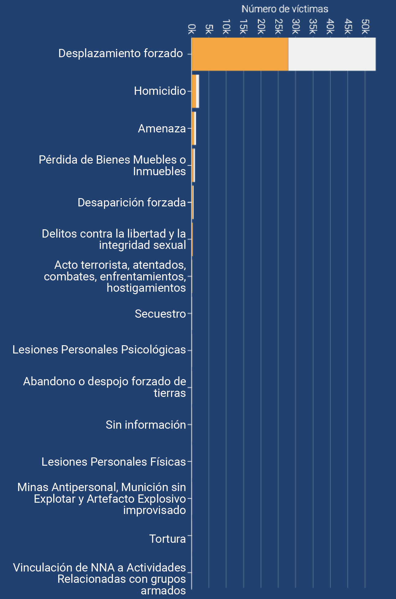
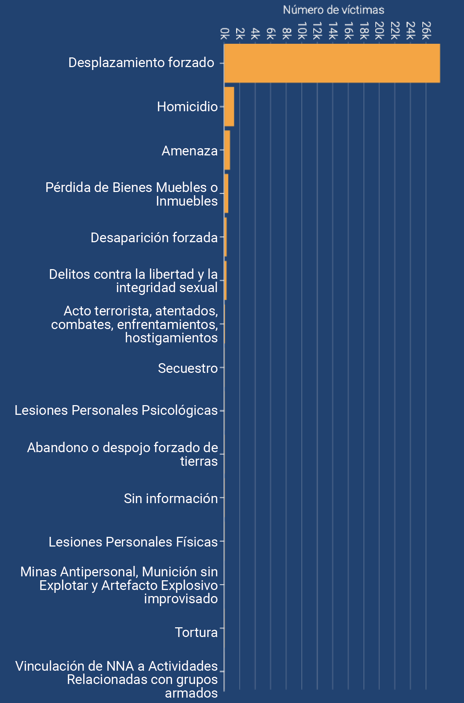
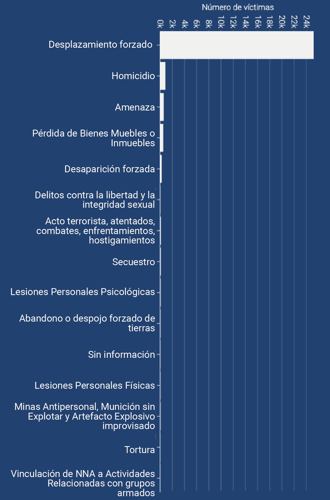
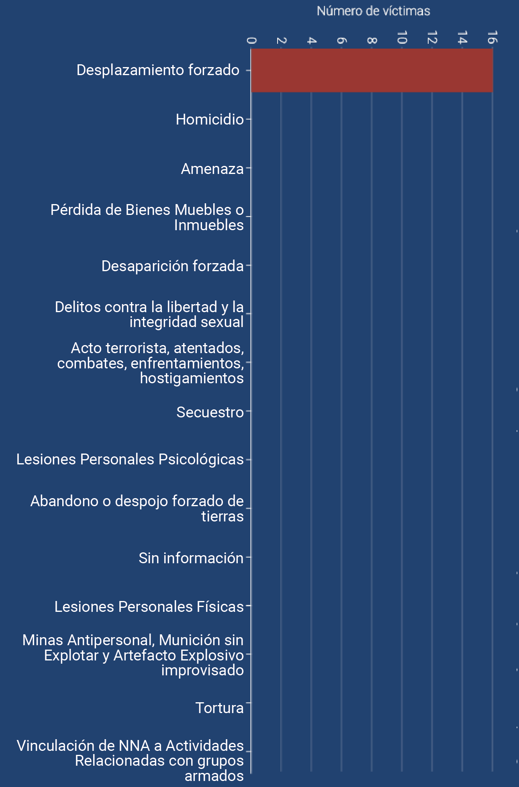
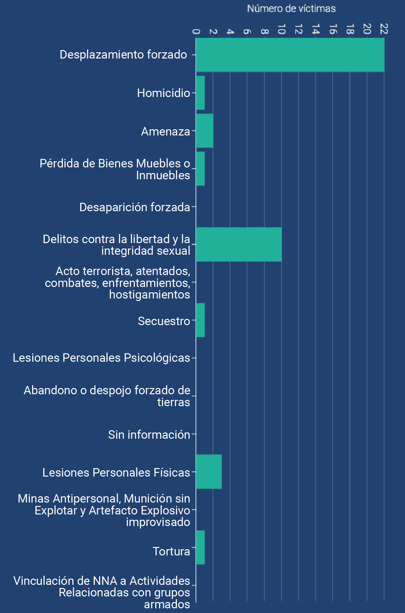

Número de víctimas de pueblos étnicos negros (afrocolombiano, palenquero y raizal) según género y hecho victimizante
Las mujeres han sido las principales víctimas de los pueblos afros, raizales y palenqueros.
Número de víctimas mujeres de pueblos étnicos negros (afrocolombiano, palenquero y raizal) según hecho victimizante
Las mujeres han sido las principales víctimas de los pueblos afros, raizales y palenqueros.
Número de víctimas hombres de pueblos étnicos negros (afrocolombiano, palenquero y raizal) según hecho victimizante

Número de víctimas intersexuales de pueblos étnicos negros (afrocolombiano, palenquero y raizal) según hecho victimizante

Número de víctimas LGBTI de pueblos étnicos negros (afrocolombiano, palenquero y raizal) según hecho victimizante
La población LGTBI afro, raizal y palenquera en el conflicto ha sido principalmente victimizada por el delito de crímenes contra la integridad y la libertad sexual.